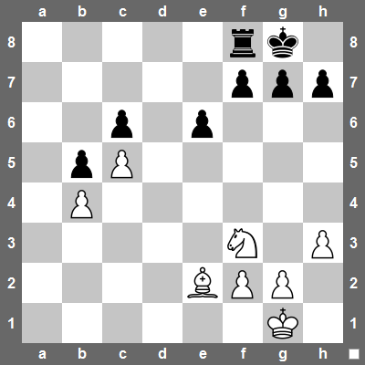

Do této chvíle jsme uměli do nějaké proměnné uložit pouze jednu hodnotu, například řetězec, DOM element nebo funkci. Počítače ale často potřebují pracovat v mnohem větším objemem dat, než je několik čísel nebo řetězců. V této lekci si ukážeme jak ukládat větší množství hodnot do jedné proměnné a jak potom můžeme s takovými hodnotami zpracovávat pomocí cyklů.
¶ Pole
Pole Array nám umožňují do jedné proměnné uložit více hodnot. Pokud znáte například jazyk Python, pole v JavaScriptu jsou totéž co seznamy v Pythonu.
Pole tvoříme pomocí hranatých závorek. Takto například do jedné proměnné uložíme známky ze všech písemek psaných za jedno pololetí.
> const marks = [3, 1, 2, 4]
Uvnitř polí je možné mít zcela libovolné hodnoty, tedy například řetězce, DOM elementy apod.
> const temperaturs = [13.5, 12.7, 11.2, 12.3, 15.1]
> const users = ['john', 'sue', 'peter', 'jane', 'soji']
Samotné pole je ovšem také hodnota. Není tedy problém mít například pole polí.
> const expenses = [['john', 250], ['sue', 170], ['peter', 337]]
Pozor na to, že podobně jako existuje prázný řetězec '', existuje také prázdné pole []. Je to zcela běžná hodnota, která se často velmi hodí.
¶ Indexy
Hodnoty uvnitř polí sídlí na takzvaných indexech. Programátoři však mají takový zvláštní fetiš, že všechno počítačí počínaje nulou, nikoliv jedničkou. Má to svoje důvody, které však zatím nebudeme rozvádět. Raději si rovnou ukážeme, jak přistupovat k hodnotám na jednotlivých indexech.
> const marks = [3, 1, 2, 4]
undefined
> marks[0]
3
> marks[3]
4
Pomocí indexů také můžeme hodnoty uvnitř pole měnit. Dejme tomu, že si poslední nehezkou čtyřku opravíme na dvojku.
> marks[3] = 2
2
> marks
[ 3, 1, 2, 2 ]
U polí, která obsahují další pole, se k jednotlivým prvkům dostaneme pomocí vícenásobného indexování. Takto například zjistíme, kolik utratil Petr v našem polí výdajů.
> const expenses = [['john', 250], ['sue', 170], ['peter', 337]]
undefined
> expenses[2][1]
337
¶ Vlastnosti a metody
Pole také mají zajímavé vlastnosti a metody. Vlastnost length už známe z řetězců.
> marks.length
4
Pomocí metody push můžeme přidat novou hodnotu na konec pole.
> marks.push(1)
5
> marks
[ 3, 1, 2, 2, 1]
Naopak pomocí metody pop poslení prvek pole smažeme.
> marks.pop()
1
> marks
[ 3, 1, 2, 2 ]
Pokud chceme odebrat prvek ze začátku pole, použijeme metodu shift.
> marks.shift()
3
> marks
[ 1, 2, 2 ]
Chceme-li přidat prvek na začátek pole, je to vlastně opačná operace k shift. Metoda pro přidání prvku na začátek pole ma tedy trochu zláštní jméno unshift.
> marks.unshift(1)
4
> marks
[ 1, 1, 2, 2 ]
Pomocí metody includes můžeme zjistit, jestli se unvitř pole nechází zadaný prvek.
> marks
[ 1, 1, 2, 2 ]
> marks.includes(1)
true
> marks.includes(3)
false
Metoda indexOf nám přímo řekne první index, na kterém se zadaný prvek v poli nachází. Pokud prvek v poli není, obdržíme -1.
> marks
[ 1, 1, 2, 2 ]
> marks.indexOf(2)
2
> marks.indexOf(3)
-1
¶ Řetězce versus pole
Řetězce jsme v tomto kurzu potkali na samém začátku. Nyní si však
můžeme ukázat, že řetězce mají s poli hodně společného. V některých
situacích se totiž chovají jako pole znaků. Už víme, že pole i řetězce
mají vlastno length. Můžete však také přistupovat k jednotlivých znakům skrze indexy.
> const name = 'Ernest'
undefined
> name.length
6
> name[1]
'r'
> name[5]
't'
Na řetězcích také najdeme metody includes a indexOf. Tentokrát však můžeme vyhledávat nejen písmenka, ale celé podřetězce.
> const text = 'Kobyla má malý bok'
undefined
> text.includes('b')
true
> text.includes('malý')
true
> text.indexOf('malý')
10
> text.indexOf('velký')
-1
¶ Použití polí
Pole v programování potkáme na každém kroku. Můžeme je například použít pro reprezentaci dat. Takto například pomocí reprezentujeme tabulku výdajů z našeho úplně prvního příkladu se spolubydlením.
const expenses = [
['Petr', 'Prací prášek', 240],
['Ondra', 'Savo', 80],
['Pavla', 'Toaleťák', 65],
['Zuzka', 'Mýdlo', 50],
['Pavla', 'Závěs do koupelny', 350],
['Libor', 'Pivka na kolaudačku', 124],
['Petr', 'Pytle na odpadky', 75],
['Míša', 'Utěrky na nádobí', 130],
['Ondra', 'Toaleťák', 120],
['Míša', 'Pečící papír', 30],
['Zuzka', 'Savo', 80],
['Petr', 'Tapeta na záchod', 315],
['Ondra', 'Toaleťák', 64],
];
Pomocí pole polí můžeme také reprezentovat herní plány v různých počítačovách hrách. Takto například mohou vypadat rozehrané piškvorky 3x3.
const tictactoe = [
['o', ' ', ' '],
[' ', 'x', ' '],
[' ', 'o', 'x'],
];
Vidíme, že na tahu je zrovna křížek. Můžeme tak snadno provést nějaký chytrý tah.
> tictactoe[0][2] = 'x'
> tictactoe
[
['o', ' ', 'x'],
[' ', 'x', ' '],
[' ', 'o', 'x'],
];
¶ Cvičení - práce s poli
¶ Pole v divadle
Celé toto cvičení prováďejte v JavaScript konzoli.
- Vytvořte nějaké pole celých čísel, například počty diváků na
několika po sobě jdoucích divadelních představeních. Použije metodu
pusha přidejte do pole počet diváků na novém představení. - Vytvořte nějaké pole desetinných čísel, například zaplněnost divadla v několika po sobě jdoucích představeních.
- Vytvořte nějaké pole řetězců, například seznam názvů několika
divadelních představení, která divadlo hraje. Uložte tento seznam do
proměnné
plays. Uložte do nějaké proměnné druhou položku tohoto pole. Pomocí metodyshiftodstraňte z pole první představení, které už divadlo nehraje. - Do proměnné
reviewsuložte pole hodnocení, které obdržela divadelní hra Plyšáci na útěku v různých recenzních časopisech. Hodnocení je vždy dvouprvkové pole obsahující název recenzního časopisu jako řetězec a samotné hodnocení jako číslo mezi 1 až 10. Pomocí metodyunshiftpřidejte na začátek nové hodnocení z časopisu Divadelní oběžník.
¶ Šachovnice
Založte JavaScriptový program a vytvořte v něm pole, které bude reprezentavat rozehranou šachovou partii jako na obrázku.

- Šachovnici reprezentujte jako pole polí, kde každý řádek je
reprezentován jako jedno pole. Políčka reprerezentujte jako čísla dle
následujícího klíče.
- 0 - prázné políčko
- 1 - pěšec
- 2 - věž
- 3 - kůň
- 4 - střelec
- 5 - dáma
- 6 - král
- Otevřete tento program v konzoli a napište příkaz, který přesune bílého koně z pozice f3 na pozici e5.
¶ Cykly
Pole a cykly jsou jakýmsi svatým grálem začátečníckého programování. Otvírají cestu k mnohem zajímavějším a komplexnějším programům a aplikacím. Cykly slouží k tomu, abychom mohli nějaký kus kódu provádět opakovaně. Síla počítačů spočívá právě v tom, že dokážou extrémně rychle provádět opakovanou činnost a tím nám ušetřit mnoho práce. V JavaScriptu existuje vícero typů cyklů a v této lekci se zatím představíme pouze ty hlavní a základní.
¶ Cyklus WHILE
Na nejpřímočařejší použití cyklu narazíme ve chvíli, kdy chceme provést nějaký kus kódu vícekrát po sobě. Pro jednoduchost zečněme tím, že budeme chtít do konzole vypsat čísla od 1 do 10. Toho dosáhneme následujícím kódem.
let num = 1;
while (num <= 10) {
console.log(num);
num += 1;
}
Na začátku si vytváříme proměnnou num, která bude obsahovat naše čísla. Poté následuje cyklus, který vypadá velmi podobně jako podmínka if. Podobně jaku u podmínek, i zde se do kulatých závorkách píše výraz, který vrací pravdivostní hodnotu. Pokud tento výraz vrátí true, vykoná se zadaný blok kódu. Jakmile však blok kódu skončí, výraz v kulatých závorkách se vyhodnotí znovu. Pokud opět vrátí true, blok kódu se vykoná znova. Takto se cyklus opakuje tak dlouho, dokud výraz v závorkách nevrátí false.
Protože v bloku kódu vždy přičteme k proměnné num jedničku, cyklus se nám zopakuje dohromady desetkrát.
Cyklus nemusíme použít jen k počítání. Můžeme například nechat uživatele zadávat heslo tak, dlouho, dokud nezadá to správné.
let pass = prompt('Enter your password:');
while (pass !== 'fatboyslim') {
pass = prompt('Wrong password. Try again:');
}
Tento program je na uživatele zbytečně zlý. Lepší by nejspíš bylo, kdybychom počet opakování omezili například na maximálně pět.
let attempt = 1;
let pass = prompt('Enter your password:');
while (pass !== 'fatboyslim' && attempt < 6) {
pass = prompt('Wrong password. Try again:');
attempt += 1;
}
Pozor na to, že stačí malá nepozornost a vyrobíme cyklus, který se opakuje do nekonečna.
let num = 1;
while (num <= 10) {
console.log(num);
num + 1;
}
V praxi se nám občas nekonečný cyklus hodí, ale většinou vzníká jako chyba v programu. Jistě se vám již mnohokrát stalo, že počítač takzvaně zamrznul. Většinou je to právě proto, že nějaký program se omylem dostal do nekonečné smyčky.
¶ Procházení pole
Velmi často budeme používat cyklus k tomu, abychom prošli nejaké pole porvek po prvku a s každým prvkem něco udělali. V takovém případě si vyrobíme cyklus, který prochází jednotlivé indexy pole a tyto indexy pak používáme k přístupu k jednotlivým prvkům. Zkusme například vypsat na obrazovku naše pole známek.
const marks = [2, 4, 1, 3, 4, 3];
let i = 0;
while (i < marks.length) {
console.log(marks[i]);
i += 1;
}
Aby cyklus správně fungoval, musíme si dát dobrý pozor jednak na to, abychom s indexm i začínali od nuly a bychom nepřekročili délku pole.
Všimněte si, že už po několikáté vidíme cyklus, kde používáme nějakou proměnnou, kterou postupně navyšujeme dokud nedojdeme k nějakému limitu. Protože tato proměnná vlastně řídí, jak dlouho se celý cyklus bude opakovat, říkáme jí řídící proměnná.
¶ Cyklus FOR
Cyklus s řídící proměnnou je v programování tak častý, že si pro něj programátoři vytvořili speciální syntaxi, která se jmenuje FOR cyklus. V cyklech FOR jsou všechny příkazy s řídící proměnnou na jednom místě a kód je pak lépe čitelný.
Ukažme si ještě jednou cyklus WHILE pro výpis známek do konzole.
const marks = [2, 4, 1, 3, 4, 3];
let i = 0;
while (i < marks.length) {
console.log(marks[i]);
i += 1;
}
Nyní pohlédněte na tutéž funkčnost zapsanou pomocí cyklu FOR.
const marks = [2, 4, 1, 3, 4, 3];
for (let i = 0; i < marks.length; i += 1) {
console.log(marks[i]);
}
Vidíte že, že nyní všechny příkazy pro práci s řídící proměnnou pěkně na začátku cyklu a nemusíme se rozlížet po celém kódu, abychom je našli.
¶ Složitejší cykly
K zajímavějším programům se dostaneme ve chvíli, kdy uvnitř cyklů začneme pracovat s proměnnými mimo cyklus. Takto například spočítáme průměrnou známku.
const marks = [2, 4, 1, 3, 4, 3];
let sum = 0;
for (let i = 0; i < marks.length; i += 1) {
sum += marks[i];
}
const averageMark = sum / marks.length;
Tímto způsobem se můžeme propracovat až k velmi složitým algoritmům, cyklům uvnitř cyklů apod. V této lekci se však budeme zatím držet při zemi.
¶ Cvičení - Cykly
¶ Sudá čísla
Následující úkoly řešte uvnitř JavaScriptového programu.
- Napište cyklus WHILE, který vypíše do konzole prvních deset sudých čísel počínaje nulou.
- Přepište váš kód jako cyklus FOR.
- Vypište sudá čísla pozpátku, tedy tak, abychom nulou skončili.
¶ Uživatelé
Založte JavaScriptový program s následujícím seznamem uživatelů.
const users = ['paja', 'kaja', 'vlasta', 'peta', 'alex', 'misa'];
- Pomocí cyklu FOR vypište všechna tato jména do konzole.
- Do konzole vypište všechna jména jako emailové adresy z domény
gmail.com. Uživatel ‘paja’ tak bude ‘paja@gmail.com’. - Vypište do konzole emaily pouze těch uživatelů, jejichž jméno má nejvýše 4 znaky.
¶ Pohyby na účtu
Založe JavaScriptový program s následujícím s záznamem vkladů a výběrů na nějakém bankovním účtu.
const amounts = [2500, -550, 1000, -1200, -3000, 1270, 2300];
- Napište cyklus FOR, který spočítá výsledný zůstatek na účtu za předpokladu, že na účtu byla na začátku nula.
- Napište cyklus WHILE, který zjistí číslo pohybu, ve kterém se účet dostal poprvé do mínusu. Vypište jak číslo pohybu, tak výši záporného zůstatku.
¶ Povinné čtení na doma
Díky tomu, že už rozumíme polím, si můžeme představit funkci document.querySelectorAll. Tato funguje podobně jako už známá funkce document.querySelector. Vrátí nám však všechny
elementy, které najde pomocí zadaného selektoru. Výsledek obdržíme jako
pole DOM elementů, které pak můžeme zpracovat v nějakém cyklu.
V lekci o událostech jsme si slíbili, že díky cyklům dokážeme zjednodušít kód číselníku naší kalkulačky. Ten nejprve vypadal takto.
<div class="numpad">
<div class="display">0</div>
<button id="btn7" class="num-btn">7</button>
<button id="btn8" class="num-btn">8</button>
<button id="btn9" class="num-btn">9</button>
<button id="btn4" class="num-btn">4</button>
<button id="btn5" class="num-btn">5</button>
<button id="btn6" class="num-btn">6</button>
<button id="btn1" class="num-btn">1</button>
<button id="btn2" class="num-btn">2</button>
<button id="btn3" class="num-btn">3</button>
<button id="btn0" class="num-btn num-btn--wide">0</button>
</div>
'use strict';
const btnClick = (event) => {
const displayElm = document.querySelector('.display');
displayElm.textContent += event.target.textContent;
};
document.querySelector('#btn0').addEventListener('click', btnClick);
document.querySelector('#btn1').addEventListener('click', btnClick);
document.querySelector('#btn2').addEventListener('click', btnClick);
document.querySelector('#btn3').addEventListener('click', btnClick);
document.querySelector('#btn4').addEventListener('click', btnClick);
document.querySelector('#btn5').addEventListener('click', btnClick);
document.querySelector('#btn6').addEventListener('click', btnClick);
document.querySelector('#btn7').addEventListener('click', btnClick);
document.querySelector('#btn8').addEventListener('click', btnClick);
document.querySelector('#btn9').addEventListener('click', btnClick);
Díky document.querySelectorAll můžeme posluchače btnClick nasadit na všechna tlačítka jedním cyklem.
'use strict';
const btnClick = (event) => {
const displayElm = document.querySelector('.display');
displayElm.textContent += event.target.textContent;
};
const buttons = document.querySelectorAll('.num-btn');
for (let i = 0; i < button.length; i += 1) {
buttons[i].addEventListener('click', btnClick);
}
¶ Datové atributy
Všimněte si, že funkce btnClick používá textContent
k tomu, aby získala číslo, které má tlačítko vlažit na displej. Snadno
bychom se však mohli ocitnout v situaci, kdy by naše tlačítka
neobsahovala ten správný textContent. Například bychom mohli chtít mít tlačítka jako obrázky, které žádný textContent
nemají. I tak bychom si ale potřebovali někam uložit cifru, která k
tlačítku patří. K tomu můžeme použít takzvané datové atributy.
Do jakéhokoliv HTML elementu můžeme přídat libovolný atribut, jehož jméno začíná předponou data-. Cifry si tak můžeme uložit například do atributu data-digit.
<div class="numpad">
<div class="display">0</div>
<img id="btn7" data-digit="7" class="num-btn" src="img/digit7.png" />
<img id="btn8" data-digit="8" class="num-btn" src="img/digit8.png" />
<img id="btn9" data-digit="9" class="num-btn" src="img/digit9.png" />
<img id="btn4" data-digit="4" class="num-btn" src="img/digit4.png" />
<img id="btn5" data-digit="5" class="num-btn" src="img/digit5.png" />
<img id="btn6" data-digit="6" class="num-btn" src="img/digit6.png" />
<img id="btn1" data-digit="1" class="num-btn" src="img/digit1.png" />
<img id="btn2" data-digit="2" class="num-btn" src="img/digit2.png" />
<img id="btn3" data-digit="3" class="num-btn" src="img/digit3.png" />
<img
id="btn0"
data-digit="0"
class="num-btn num-btn--wide"
src="img/digit0.png"
/>
</div>
K datovým atributům se pak v JavaScriptu snadno dostaneme pomocí vlastnosti dataset. Funkci btnClick bychom tak mohli přepsat takto.
const btnClick = (event) => {
const displayElm = document.querySelector('.display');
displayElm.textContent += event.target.dataset.digit;
};
Pomocí datových atributů si můžeme k elementům uložit libovolné informace, se kterými pak můžeme v JavaScriptu snadno pracovat.
¶ Doporučené úložky na doma
¶ Čekání na šestku
Založte JavaScriptový program a splňte následující úkoly.
- Napište funkci
roll, která simuluje hod kostkou. Vrátí tedy náhodné číslo od 1 do 6 tak, že všechna čísla mají stejnou pravděpodobnost. - Váš program nechť hází kostkou tak dlouho, až poprvé padne šestka. Vypište na výstup na kolikátý pokus šestka padla.
- Spusťte váš program desetkrát za sebou a zaznamenejte výsledky. Sdílejte vaše výsledky s ostatními abychom nasbírali co nejvíce dat.
¶ Malé algoritmy
Založte si nový JavaScriptový program a na jeho začátek vložte následující seznam čísel. Budeme jej používat ve všech následujících úlohách.
const numbers = [
-24, -11, 27, 29, -4, -28, -21, -14, 3, -8, 24, 19, -25, -2, -1, 11, 32, -31, 5
];
- Vypište na výstup všechna čísla.
- Vypište na výstup druhé mocniny všech čísel.
- Vypište na výstup pouze záporná čísla.
- Vypište na výstup absolutní hodnotu všech čísel.
- Vypište na výstup pouze ta čísla, jejíchž absolutní hodnota je dělitelná třemi.
- Vypište na výstup pouze sudá čísla.
- Vypište na výstup jak daleko je každé číslo v seznamu od čísla 5.
- Vypište na výstup druhé mocnicny vzdáleností všech čísel od čísla 5.
- Spočítejte, kolik je v seznamu záporných čísel.
- Spočítejte součet všech čísel v poli.
- Spočítejte průměr všech čísel v poli.
- Spočítejte součet všech pozitivních čísel v poli.
¶ Piškvorky základ
Hrát piškvorky 3x3 rychle přestane být zábava, neboť brzy objevíme, že pokud oba hráči hrají dobře, nemůže žádný z nich vyhrát. Pokud však herní plán zvětšíme na 4x4 a přidáme dvě nová pravidla, začínající hráč může vždy vyhrát. A pokud zrovna první hráč nehraje dokonalou hru, i druhý hráč má slušnou naději na vítězství.
V našich piškvorkách vyhraje ten hráč, který na libovolném místě hracího plánu vytvoří ze svých symbolů jeden z následujících vzorů.

Reprezentace hracího plánu
Než vůbec začneme programovat, je třeba si rozmyslet, jak budeme reprezentovat hrací plán. Inspirováni myšlenkou popsanou v této lekci bychom mohli plán reprezentovat jako pole polí například takto.
const gamePlan = [
[' ', ' ', ' ', ' '],
['o', 'x', 'x', 'x'],
[' ', ' ', 'o', ' '],
[' ', 'o', ' ', ' '],
];
Když však začneme aplikaci skutečně psát, po čase zjistíme, že se nám mnohem více hodí reprezentace, která nepoužívá pole polí, nýbrž pouze jedno dlouhé pole čísel. Křížek pak reprezentujeme jako 1, prázdné políčko jako 0 a kolečko jako -1. Hrací plán uvedený výše pak bude vypadat takto.
const gamePlan = [
0, 0, 0, 0,
-1, 1, 1, 1,
0, 0, -1, 0,
0, -1, 0, 0,
];
Pozor na to, že bílé znaky jako mezery a nové řádky jsme sem vložili pouze pro lepší čitelnost kódu. Z hlediska JavaScriptu náš hrací plán vypadá takto.
const gamePlan = [0, 0, 0, 0, -1, 1, 1, 1, 0, 0, -1, 0, 0, -1, 0, 0];
Nyní už jsme připravení začít psát naši aplikaci.
Aplikace piškvorky
Stáhněte si základ webové aplikace pro naše piškvorky a postupujte dle následujících kroků.
- Vytvořte funkci
squareClick, která bude reagovat na kliknutí na čtverec na hracím plánu. Uvnitř této funkce získejte odkaz na element, na který bylo kliknuto, a vypište do konzole hodnotu atributudata-index. - Vyberte z dokumentu všechny elementy s třídou
squarea na každý z nich pověste funkcisquareClickjako reakci na kliknutí. Po spuštení aplikace pozorujte, zda se v konzoli po kliknutí na jeden čtverec zobrazí jeho správný index. - Zařiďte, aby funkce
squareClickkromě zobrazení indexu přidala na element čtverce CSS třídusquare--cross. Po kliknutí na čtverec byste měli uvidět křížek. - Vytvořte globální proměnnou
onTurn, která obsahuje číslo 1 nebo -1 podle toho, zda je zrovna na tahu křížek nebo kolečku. Při kliknutí na čtverec zobrazte symbol, který je zrovna na tahu a nastavte proměnnouonTurnna opačný symbol. CSS Třída pro kolečko se jmenujesquare--circle. - Všimněte si, že nyní je možné táhnout na poličko, na které už bylo
před tím taženo. Abyste tomu zabránili, vytvořte globální proměnnou
gamePlanobsahující hrací plán nastavený na samé nuly. Pokaždé, když uživatel klikne na políčko, nastavte příslušnou hodnotu v hracím plánu na správný symbol. Dovolte táhnout pouze na ta políčka, pro které je v hracím plánu uložena nula.
Nyní už si piškvorky můžete zahrát. Hurá!! Chybí nám však možnost,
aby program sám poznal, kdo vyhrál. Zkuste se zamyslet nad tím, jak
byste podle toho, co je zrovna uloženo v proměnné gamePlan rozhodli, kdo vyhrál.
Vymyslet program tak, aby korektně rozpoznal všechny možné výherní kombinace, a zároveň neobsahoval obrovské nepřehledné množství podmínek, není jednoduchý úkol. S trochou vedení lze však vyřešt poměrně elegantně. Tuto číst si však necháme do nepovinné sekce, abychom netrápili ty, komu po tomto úkolu již piškvorky lezou i ušima.
¶ Nepovinné úložky na doma
¶ Registrace
Stáhněte se připravenou stránku s registračním formulářem pro nového uživatele. Doplňte do stránky JavaScriptový kód tak, aby byly splněny následující požadavky.
- Pokud uživatel zadá uživatelské jméno, které je již obsaženo v poli
users, vypište do prvku s třídoureg-form__errorchybovou hlášku ve smyslu, že zadané uživatelské jméno je již zabráno. - Zkontrolujte, že heslo zadané do prvního políčka je dostatečně
bezpečené. Heslo považujeme za bezpečné, pokud má alespoň 10 znaků nebo
obsahuje alespoň jeden ze znaků pomlčka
-, podtržítko_nebo dvojtečka:.
¶ Skalární součin
Toto zadání může stát samo o sobě jako užitečný příklad na procvičení cyklů. Zároveň nám však pomůže dotáhnout do konce naše 4x4 piškvorky.
Vaším úkolem je napsat funkci, která dělá takzvaný skalární součin dvou polí. Mějme dvě stejně dlouhá pole čísel arr1 a arr2. Skalární součin se spočítá tak, že vynásobíme první prvek pole arr1 s prvním prvkem pole arr2. Poté vynásobíme druhý prvek pole arr1 druhým prvkem pole arr2. Takto vynásobíme všechny dvojice čísel na odpovídajících indexech. Všechny výsledky pak sečteme dohromady.
Mějme například tato dvě pole.
const arr1 = [2, -1, 0, 3];
const arr2 = [3, 2, 8, 1];
Jejich skalární součin bychom ručně spočetli takto:
> 2*3 + (-1)*2 + 0*8 + 3*1
7
Napište funkci dotProduct, která jako svoje vstupy dostane dvě stejně dlouhá pole a vrátí jejich skalární součin.
> const arr1 = [2, -1, 0, 3];
> const arr2 = [3, 2, 8, 1];
> dotProduct(arr1, arr2)
7
Vyzkoušejte si na vícero příkladech a polích různých délek, že vaše funkce opravdu spolehlivě funguje. Pokud budete chtít dokončit hru piškvorky, budete ji potřebovat.
¶ Piškvorky dokončení
Nyní už si můžeme troufnout dokončit naši hru s piškvorkami. Zbývá nám naučit náš program ropoznat situaci, kdy některý z hráčů vytvořil na hracím plánu vyhrávací vzor. K tomu nám velmi pomůže kartézský součin polí z předchozího příkladu. Představte si například takovýto hrací plán.
const gamePlan = [
1, -1, 1, 1,
0, 1, 0, -1,
-1, -1, 0, 0,
-1, 0, 0, 0,
];
Vezměme nyní pole, které vypadá takto.
const pattern = [
1, 1, 1, 1,
0, 0, 0, 0,
0, 0, 0, 0,
0, 0, 0, 0,
];
Rozmysleme si, jak by dopadl kartézský součin polí gamePlan a pattern.
Ihned vidíme, že nás zajímají pouze první čtyri prvky. Násobení nulou
je vždy nula, zbylé prvky pole tedy výsledek nijak neovlivní.
Všimněte si, že pokud jsou první čtyři prvky v poli gamePlan
jedničky, kartézský součin bude přesně 4. Pokud by byly první čtyři
prvky -1, výsledek bude -4. Ve všech ostatních případech bude výsledek
něco mezi -4 a 4. Takto jsme tedy rovnou získali test na to, jestli
někdo z hráčů má čtveřici na prvním řádku. Pokud kartézský součin vyjde
4, vyhrál hráč s křížkem. Pokud vyjde -4, vyhrál hráč s kolečkem. Pokud
vyjde něco jiného, žádný z hráčů nemá v prvním řádku čtveřici.
Pomocí pole pattern jsem tak vyzkoušeli první řádek.
Zbývá nám vyzkoušet všechnyh ostatní možnosti, tedy ostatní řádky,
sloupce, diagonály a tak dále. Pro každou z těchto možností potřebujeme
jedno pole, které, podobně jako pole pattern výše, udává, na jaká políčka na hracím plánu zrovna kontrolujeme.
K dokončení hry postupujte podle následujicích instrukcí.
- Sestavte pole
patterns, které obsahuje všechny pole udávající výherní kombinace ve hře. Nerad bych váš připravil a zábavu při hledání všech možností. Pro kontrolu však vězte, že je jich dohromady 23. - Vytvořte funkci
score, která jako svůj vstup dostane hrací plán a vrátí v jakém stavu se zrovna hra nachází. Výsledek 1 znamená, že vyhrál křížek, výsledek -1, že vyhrálo kolečko, výsledek 0, že nastala remíza a výsledeknull, že hra se ještě hraje. Pokud si nejste jistí, jak funkci napsat, postupujte následujícím postupem.- Funkce nejprve zkontroluje, zda již někdo vyhrál. Musí tedy v cyklu projít všechny výherní vzory a zkontrolovat, jestli skalární součin herního plánu s nekterým vzorem vyjde 4 nebo -4. V takovém případě vrátím z funkce rovnou 1 nebo -1.
- Pokud skalární součin ani jednou nevyšel 4 nebo -4, znamaná to, že hra je ještě v běhu nebo že nastala remíza. Remíza nastala tehdy, když na hracím plánu již není žádné volné políčko. V takovém případě vraťte číslo 0.
- Pokud neplatí ani jedna z předešlých možností, hra je stále v běhu. Vraťte hodnotu
null.
- Po provedení každého tahu si nechte pomocí funkce
scorezjistit stav hry. Podle výsledku buď nechte hru normálně pokračovat nebo zobrazte uživateli zprávu že vyhrál, prohrál nebo nastala remíza.
Hurá!! Napsali jste svoji možná úplně první počítačovou hru.
¶ Těžší algoritmy
Založte si nový JavaScriptový program a na jeho začátek vložte následující seznam čísel. Budeme jej používat ve všech následujících úlohách.
const numbers = [
-24, -11, 27, 29, -4, -28, -21, -14, 3, -8, 24, 19, -25, -2, -1, 11, 32, -31, 5
];
- Vypište na výstup všechna čísla, která jsou větší než jejich předchůdce.
- Vypište na výstup všechny vrcholy v daném poli. Vrchol je číslo, které je větší než jeho předchůdce i jeho následovník.
- Nejprve spočítejte průměr čísel v poli a výsledek si ulože do proměnné mean. Poté spočítejte součet druhých mocnin vzdáleností všech čísel od průměru.
- Spočítejte směrodatnou odchylku čísel v poli. To provedete tak, že
nejprve spočítáte takzvaný rozptyl, což je průměr druhých mocnin
vzdáleností všech čísel od průměru. Rozptyl pak odmocníte pomocí funkce
Math.sqrt. - Najděte s seznamu největší prvek.
- Najděte s seznamu největší prvek, který je menší než číslo 16.
¶ Algoritmy pro fajnšmekry
Založte si nový JavaScriptový program a na jeho začátek vložte následující seznam čísel. Budeme jej používat ve všech následujících úlohách.
const numbers = [
-24, -11, 27, 29, -4, -28, -21, -14, 3, -8, 24, 19, -25, -2, -1, 11, 32, -31, 5
];
- Vypište na výstup délku nejdelší rostoucí sekvence čísel, které v poli následují přímo po sobě.
- Vypište na výstup délku nejdelší rostoucí nebo klesající sekvence čísel, které v seznamu následují přímo po sobě.
- Najděte druhý největší prvek v seznamu.
- Najděte nejnižší vrchol a nejvyšší údolí. Údolí je číslo, které je menší než jeho předchůdce i následovník.